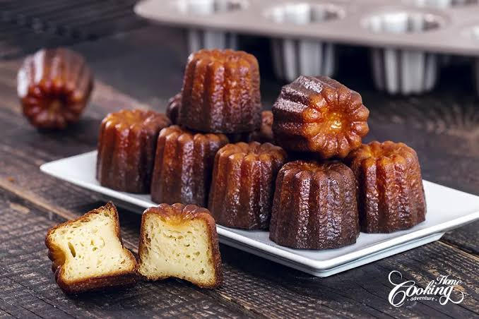

01 — CANELÉ DE BORDEAUX
Canelé de Bordeaux
Pequeno doce tradicional de Bordeaux, conhecido por sua casca caramelizada e interior macio, aromatizado com baunilha e rum.
Representa:
tradição regional, simplicidade refinada
e a arte de transformar poucos ingredientes
em uma experiência sofisticada.